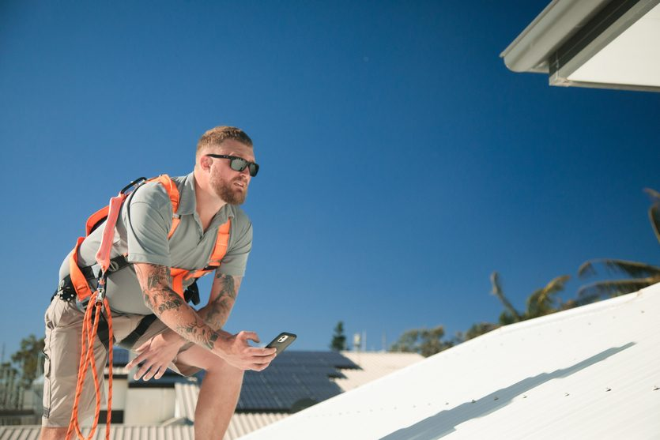
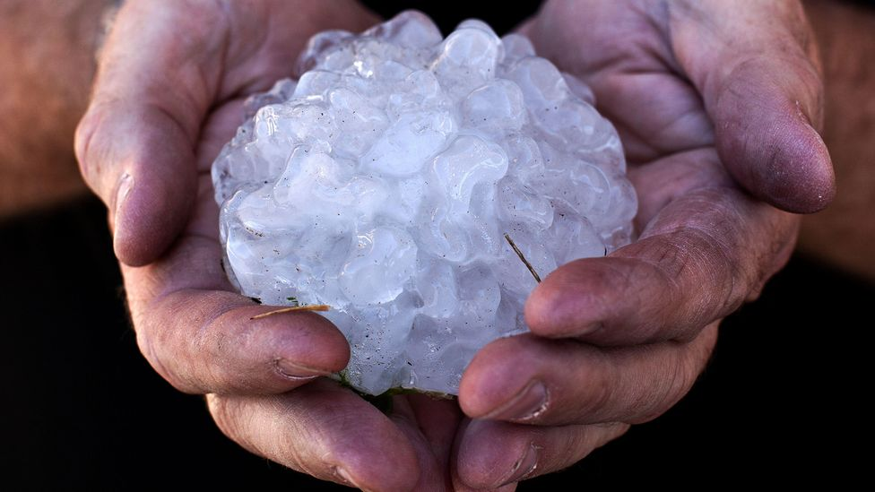
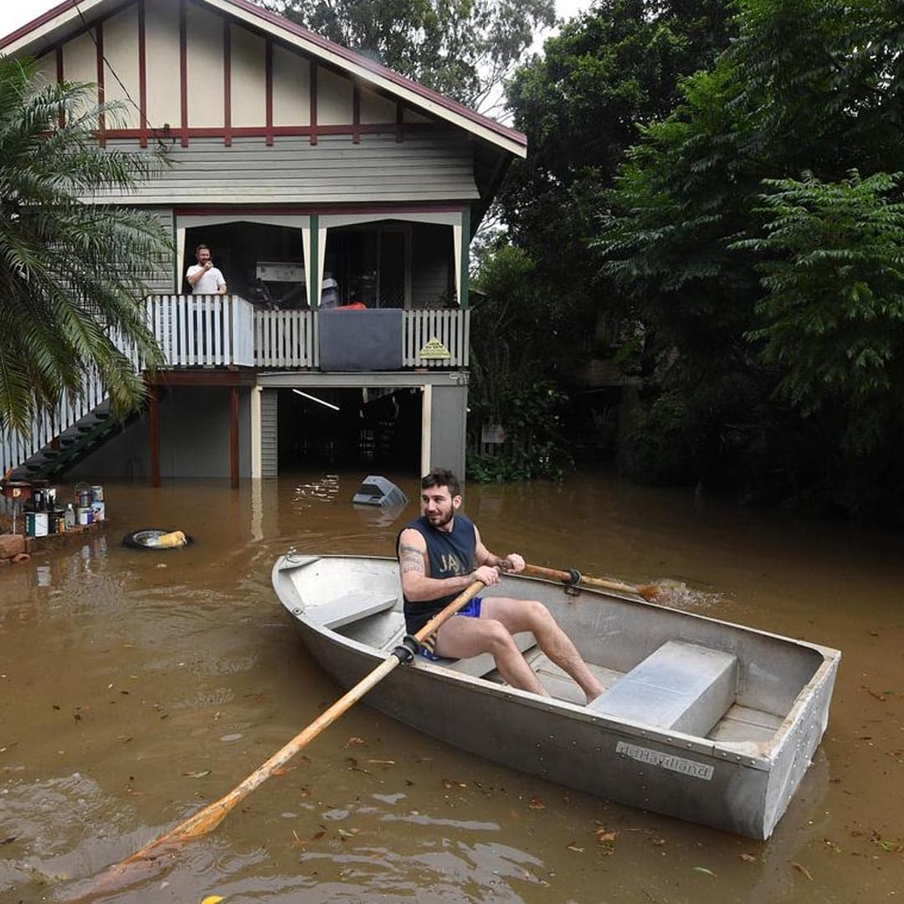

When catastrophe hits,the customer is our priority.
Watermark Constructions has repaired more than 62,000 properties for Australia's major insurers since 2000. From everyday claims to the biggest weather events Queensland has seen, we're there when it matters.
Agile for BAU. Built for catastrophe.
We work closely with our insurer partners and clients through the life of every claim, with a view that even the smallest changes and efficiencies can make a large difference to the outcome for the client, the builder and the occupant combined.
We have extensive repair knowledge spanning the impacts of natural disasters, coupled with an impressive trade resume. We're adept at managing everyday damage claims (BAU) along with those presented by catastrophe, and our capacity to deploy resources on short notice to any location in Queensland has seen us embedded in communities affected by cyclone, flood and hail, supporting home and business owners through recovery.


Properties repaired
For multiple insurers since 2000.
Make Safe response
365 days a year, thousands completed.
Catastrophe events

Major QLD weather events since 2006.
A dedicated team on every claim.
We allocate a project administrator, a project manager and a site supervisor to each claim. That team is the insured's direct contact for the life of the repairs, which builds trust, insight into the claim and a tight knit crew able to solve issues promptly as they arise.
24/7/365 Make Safe
Having completed thousands of Make Safe responses, we minimise and mitigate the risk of additional damage while securing the safety of property owners and their loved ones.
Rapid deployment
Crews mobilised from the nearest base, a local operation established, and local contractors engaged so we can resource multiple regions at once without dropping quality.
Everyday claims (BAU)
The same discipline on a single kitchen flood as on a cyclone. Clear communication, tidy scheduling and a finish that brings the property to current standards.
Customer care
We understand the toll repairs take on a family or business. We build relationships of relevance with every insured, and work to impart a feeling of being our only customer.
Vulnerable customers
A broad team with the empathy and experience to support vulnerable or sensitive customers, with particular focus on those escaping from or experiencing domestic violence.
Built to standard
From awnings and roofs to major structural upgrades, repairs bring older properties up to current building standards, including cyclonic region requirements.
Two decades on the front line.
Every major Queensland weather event since 2006, and the communities we helped rebuild afterwards.
People like us, do things like this.

Insurance RepairRockhampton Hail
Giant hailstones wreaked havoc across central Queensland in April 2020, causing an estimated $850 million in damage. Over 1,400 homes and businesses rebuilt.

Insurance RepairTropical Cyclone Debbie
The strongest cyclone to strike Queensland since Marcia. Crews mobilised within 48 hours, 1,532 properties repaired across the Whitsundays.